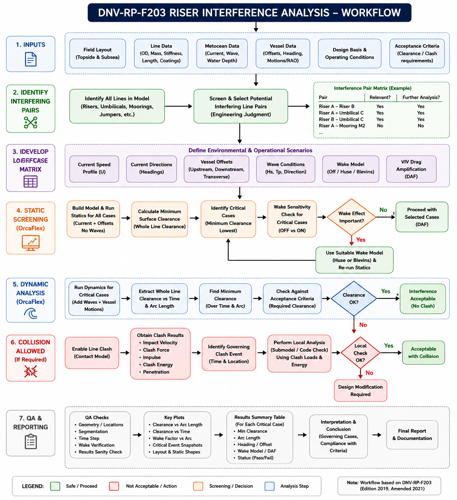

This map combines the detailed DNV-RP-F203-informed interference workflow with the project decision chain you supplied: base OrcaFlex model → metocean / vessel offsets → load-case matrix → 100-year current 360° sweep → minimum clearance → dynamic re-analysis of critical cases → PCA clearance / clash evaluation → clash-energy acceptance or design change.
A compact view of the workflow you described. Click any box for details.
Geometry, line properties, topside / subsea layout.
Current + associated wave basis.
Heading, offset / setdown, motion basis.
Environmental and operational scenarios.
Static screening across headings.
Whole-line surface clearance + arc length.
No concern → screen out. Critical → dynamic route.
Apply wave / vessel motions to governing cases.
Time-domain OrcaFlex for selected cases.
Δmin + arc length + governing time.
No → pass. Yes → obtain contact demand.
Impact / clash result for governing event.
Project acceptance threshold.
Modify geometry / boundary / line properties.
Acceptable interference result.
Detailed implementation arranged in the same seven-stage logic as the supplied reference workflow.
Sensitivity is used to identify the physical driver, not merely to create another result table.
Vary the departure geometry and re-run the governing / critical cases.
Modify line stiffness / weight characteristics consistently with the candidate armour change.
Vary vessel offset / setdown boundary conditions around the governing configuration.
The image below is kept as the visual reference while the native HTML above provides the interactive version.
